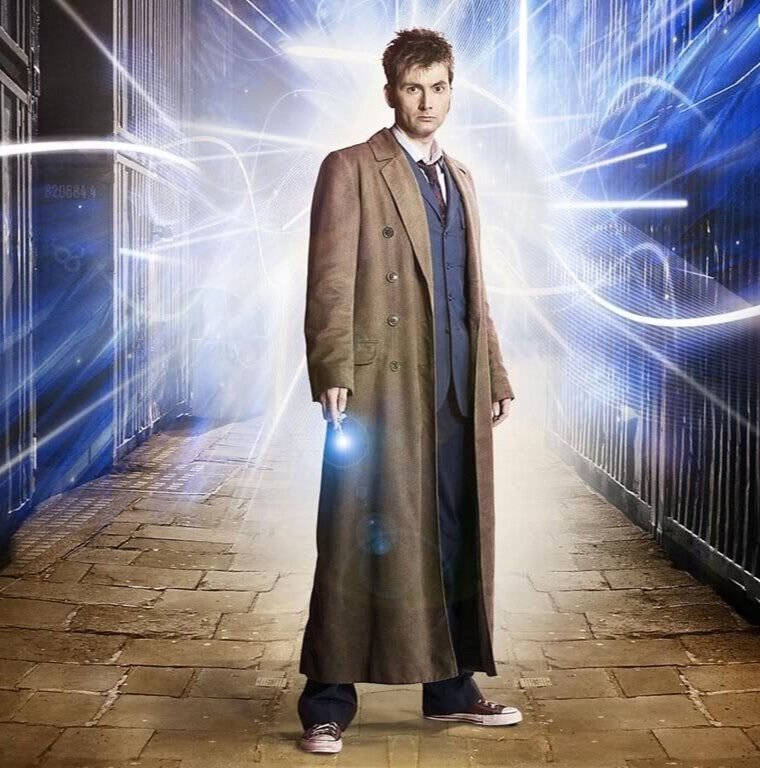
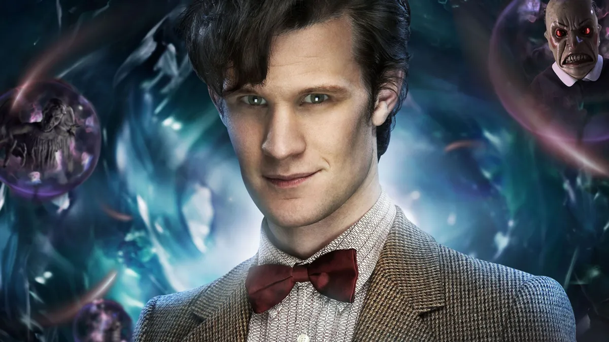
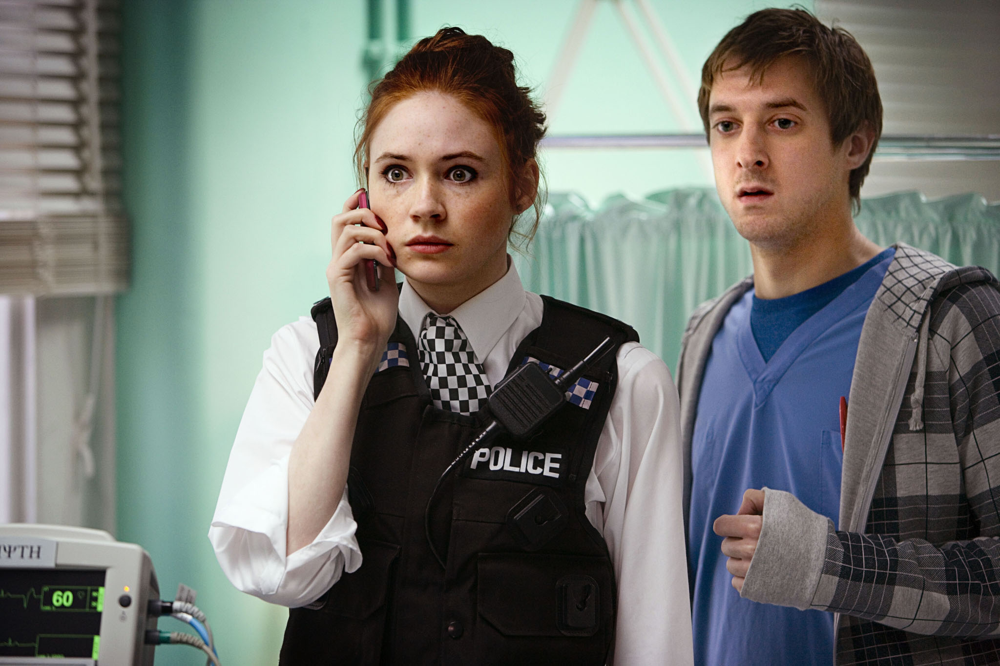

10th Doctor - The Time Lord Victorious
Le Dixième Docteur, la première des incarnations de l'homme maigre, affichait une façade conviviale et frivole pour dissimuler la fureur intérieure et la mélancolie nostalgique qui naissaient de sa culpabilité sous-jacente à l'égard de la dernière grande guerre temporelle et des morts et des malheurs supplémentaires qui en ont découlé. En effet, une fois que son attitude décontractée avait été submergée par le conflit, l'énergie du Docteur changeait pour révéler un homme férocement protecteur qui gardait résolument ce qui lui était cher, et qui pouvait être vicieusement impitoyable envers les forces qui osaient les menacer jusqu'à ce qu'il soit victorieux.
Cependant, il avait un profond respect pour le pacifisme et une tolérance zéro à l'égard de tous ceux qui voulaient recourir à la violence pour résoudre les conflits, et il désapprouvait les armes à feu, à moins qu'elles ne soient indiscutablement utilisées en dernier recours. Il avait également des problèmes de vanité qui le rendaient attaché à son corps actuel, cet attachement à son corps actuel était si fort qu'il est devenu la seule incarnation du Docteur à avorter volontairement l'une de ses régénérations au milieu du processus lui-même, en siphonnant l'énergie de régénération restante qui lui aurait donné un nouveau corps dans un bio-réceptacle correspondant, permettant au Docteur de se guérir tout en gardant le même visage après avoir été frappé par l'énergie neutronique d'un bâton d'arme à feu de Dalek.
Traduit avec DeepL.com (version gratuite) depuis la description du site : Fandom
11th doctor - The beast of Trenzalore
- Predator of the Daleks
Dernière incarnation du cycle de régénération original du Docteur, le Onzième Docteur a découvert que sa réputation s'était tellement développée qu'il attirait de nouveaux conflits dus à la peur que les peuples de l'univers avaient de lui et de son destin sur Trenzalore. Il est devenu un individu secret et rusé pour son propre bien et celui de ses proches, tout en se comportant comme un hipster farfelu en embrassant sa vie de conte de fées avec son obsession pour la résolution de mystères et son amour pour les plaisirs offerts par le temps et l'espace.
Arrivé à la maison d'Amy Pond en 1996 lors d'un atterrissage en catastrophe causé par les dommages subis par son TARDIS lors de sa régénération, le Docteur a trouvé une fissure dans le tissu du temps et de l'espace dans le mur, mais a dû partir dans le TARDIS lorsque les moteurs ont commencé à surchauffer. Il n'est revenu qu'en 2008, où il a été aidé par Amy Pond et Rory Williams pour empêcher les Atraxi de détruire la Terre afin de trouver le Prisonnier Zéro, qui a averti le Docteur que « le silence [tomberait] » lorsque la Pandorica s'ouvrirait. Après avoir testé son TARDIS reconstruit, le Docteur est revenu pour tenir sa promesse de faire voyager Amy avec lui en 2010, (TV : The Eleventh Hour [+]) l'emmenant sur Starship UK en 3295, où ils ont aidé à libérer la baleine des étoiles, (TV : The Beast Below [+]) puis à Londres en 1941, où le Docteur n'a pas réussi à empêcher la montée du Nouveau Paradigme Dalek. (TV : Victory of the Daleks [+])
Traduit avec DeepL.com (version gratuite) depuis la description du site :Fandom


Amy et Rory Pond
Amelia Jessica Williams, née Pond, plus connue sous le nom d'Amy à l'âge adulte, était une compagne du Onzième Docteur.
Elle était la petite amie puis l'épouse de Rory Williams et la mère de Melody Pond, connue plus tard sous le nom de River Song. Amy est décédée à l'âge de quatre-vingt-sept ans avant 2012 après avoir permis à un ange pleureur de la renvoyer dans le passé, dans l'espoir de retrouver son mari qui venait d'être attaqué par le même ange. Elle a été enterrée aux côtés de Rory dans un cimetière de New York.
Traduit avec DeepL.com (version gratuite) depuis la description du site :Fandom
Clara Oswald - The impossible girl
Clara Oswald était la compagne des Onzième et Douzième Docteurs. À plusieurs reprises, alors que le « vrai » Docteur était absent ou incapable, elle a assumé le manteau, la promesse et le nom du « Docteur », le Douzième Docteur reconnaissant à l'une de ces occasions qu'elle « faisait un très bon Docteur ».
Selon le Docteur, elle était « impossible » en raison de leurs rencontres antérieures dans sa ligne temporelle personnelle, deux rencontres au cours desquelles il l'a vue mourir. Bien que la médium Emma Grayling et le scanner du TARDIS lui aient assuré que Clara n'était qu'une « fille ordinaire », le Docteur ne pouvait pas croire que c'était vrai et pensait qu'elle était « le seul mystère qui mérite d'être résolu ».
Alors qu'elle est une femme humaine physiquement ordinaire du 21ème siècle, Clara a choisi d'entrer dans la ligne temporelle du Docteur dans sa tombe sur Trenzalore afin d'essayer d'inverser les dommages causés à sa ligne temporelle par la Grande Intelligence. Les vents temporels l'ont alors brisée en millions de ce que River Song appelle des « échos » ou des « éclats » qui ont été dispersés dans sa ligne temporelle personnelle. Ces échos corrigent les dommages causés par la Grande Intelligence mais ne sont pas la Clara originale. Elle a été piégée dans le flux temporel du Docteur mais a été sauvée peu de temps après.
Après Trenzalore, Clara est devenue institutrice, bien qu'elle ait continué à voyager avec le Docteur, rencontrant ses incarnations de la Guerre et de la Dixième. Elle était avec lui lorsqu'il s'est régénéré dans sa douzième incarnation, après avoir encouragé les Seigneurs du Temps à lui accorder un nouveau cycle de régénération, et a continué à voyager avec lui par la suite.
Clara a ensuite rencontré Danny Pink, un autre instituteur, dont elle est tombée amoureuse. Cependant, elle lui a menti en lui disant qu'elle avait abandonné ses voyages avec le Docteur, avant de le perdre dans un accident de voiture, puis à nouveau à cause de Missy, malgré tous ses efforts pour le ramener à la vie.
Après la perte de Danny, Clara est devenue moins attachée à la Terre et a commencé à copier les aspects héroïques de la personnalité du Docteur ; cela l'a amenée à devenir de plus en plus imprudente, car elle croyait qu'il avait toujours un plan.
L'héroïsme de Clara finit par lui coûter cher. Alors qu'elle tentait de prouver l'innocence de Rigsy dans une fausse accusation de meurtre, elle lui a pris un Chronolock, qui a tué la personne marquée au fer rouge. Le Corbeau, qui devait à l'origine tuer Rigsy, la tua à sa place. Plus tard, le Docteur l'a extraite de son propre point fixe de mort dans sa ligne temporelle en utilisant une chambre d'extraction sur Gallifrey. Sous sa forme ressuscitée, Clara n'avait aucun des aspects habituels de la vie, comme respirer, avoir un pouls ou même vieillir, au lieu d'être coincée « entre un battement de cœur et le suivant ».
Le Docteur a alors volé un TARDIS et s'est échappé de Gallifrey, voyageant jusqu'à la fin de l'univers pour tenter de ramener Clara à la vie, ce qui s'est avéré inefficace. Le Docteur avait prévu d'effacer la mémoire de Clara qui avait voyagé avec lui, mais au lieu de cela, dans un retournement de situation, le Docteur a perdu ses souvenirs de Clara. Elle est alors partie dans l'autre TARDIS, prévoyant de l'utiliser pour faire « le long chemin » jusqu'à Gallifrey.
Traduit avec DeepL.com (version gratuite) depuis la description du site :Fandom